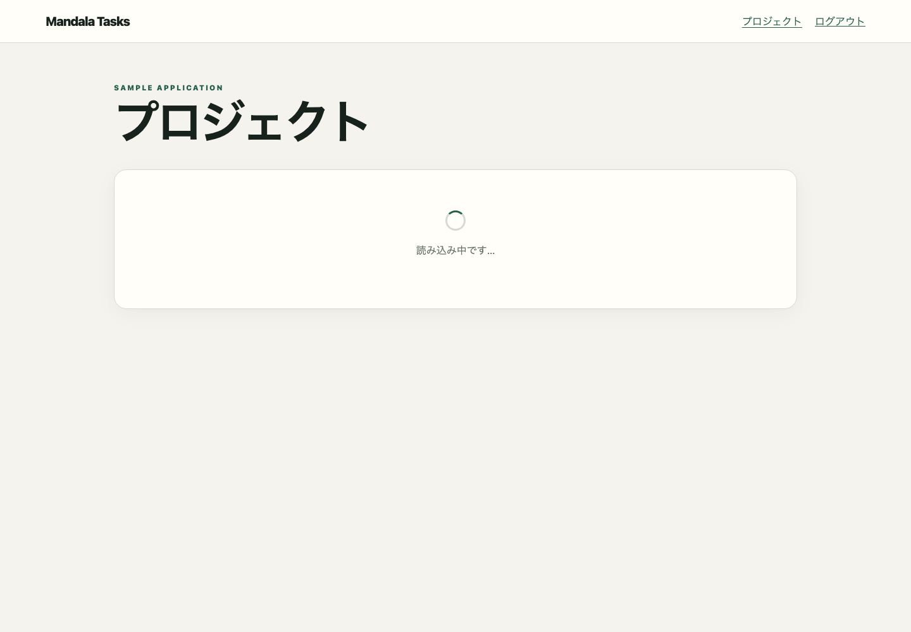

public.projects
table:public.projectsflow:projects.loadingObserved E2E flow from /projects to /projects in loading state

table:public.projects[]2026-01-15T03:00:00.000Z/projects[{method=GET, mockId=projects-loading:0, path=/api/projects, requestBody=null, responseBody=[], status=200, undefined=false}]/projectsprojects-loadingebc5298c9e044fac6ad8bc9f88435a45aa99881673bef98f286e094afc75ef47loading[]{}
mandala/snapshots/ui/projects-loading.json